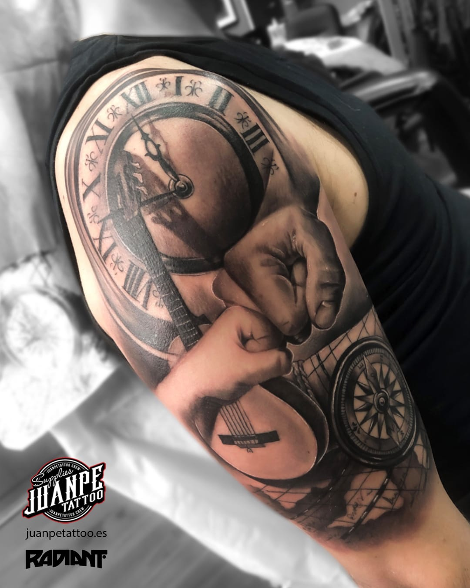
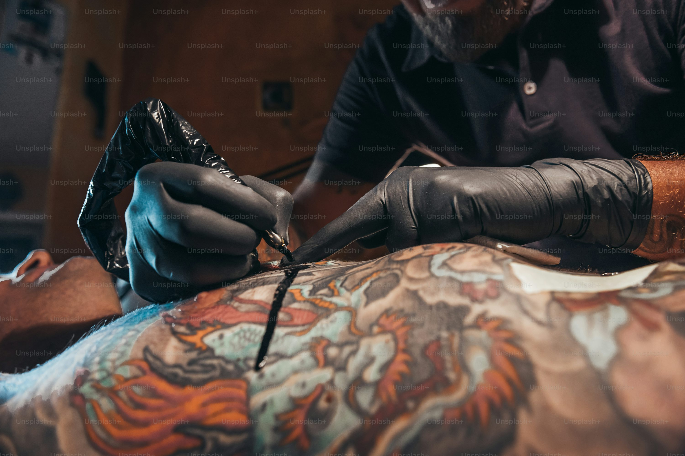

Para hacer tatuajes realistas se requiere de una gran experiencia como tatuador. Con el trabajo y la
formación constante he llegado
a realizar más de mil tatuajes realistas. Así es como he pulido y perfeccionado mi técnica.
Aquí encontrarás la esencia de VÍCTOR PIEDRAHITA como tatuador profesional de tatuajes realistas. Desde mis comienzos en el mundo del dibujo y el diseño, hasta los diferentes lugares por los que he pasado sin dejar de formarme, aprendiendo en cada etapa de la mano de los mejores tatuadores.
Mi trabajo personal plasmado en la piel de mis clientes. Animales, rostros, surrealismo,
objetos, personajes, calaveras... En definitiva,
las IMÁGENES MÁS REPRESENTATIVAS DE MI PASIÓN por los tatuajes realistas e hiperrealistas. - Los
frutos de un desarrollo profesional
continuo.


DESEAS TATUARTE POR VÍCTOR PIEDRAHITA ?
¿Quieres tatuarte con uno de los mejores tatuadores en realismo de España? No lo dudes, ponte en
contacto a través del formulario.